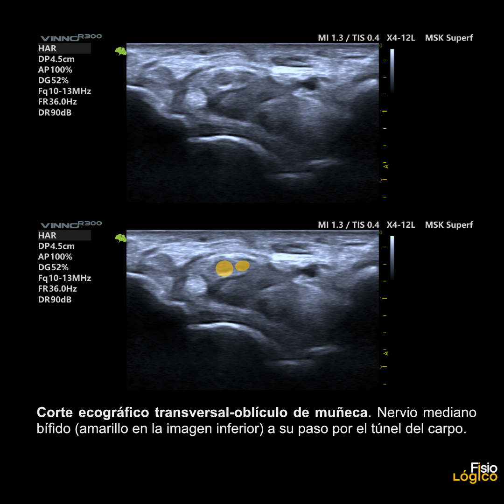

Respuesta clínica corta
¿Qué variantes conviene buscar antes de intervenir el túnel carpiano?
Intrusión lumbrical, músculo de Gantzer, arteria mediana persistente, origen y trayecto de la rama motora tenar, además de la relación con palmar largo.
Dato clave294 extremidades · nervio bífido 12,8 % · variantes no asociadas al diagnóstico electrofisiológico
Las variantes anatómicas son frecuentes y relevantes antes de una intervención, pero en esta muestra no se asociaron con el diagnóstico electrofisiológico de síndrome del túnel carpiano.
Observado
Qué encontró y cómo interpretarlo
La serie aporta prevalencias en una muestra clínica amplia y describe variantes relevantes para planificar procedimientos.
La clasificación electrodiagnóstica ofrece un contexto clínico, aunque el diseño transversal no establece que una variante cause síntomas.
La elevada frecuencia de algunas variantes refuerza la necesidad de un mapa previo, no la indicación automática de tratar.
Atlas del artículo
Imágenes para entender el procedimiento
Estas imágenes son creaciones originales del archivo clínico de FisioLógico. Se muestran por su utilidad anatómica o técnica, no como prueba aislada de diagnóstico o eficacia.

Corte ecográfico transversal oblicuo de muñeca que muestra un nervio mediano bífido a su paso por el túnel del carpo; las dos ramas están señaladas en amarillo en la imagen inferior.
Cómo leerlaLa imagen ilustra una variante anatómica en una exploración concreta; no diagnostica síndrome del túnel carpiano ni demuestra que la bifidez sea la causa de los síntomas.
Ecografía y composición: Francisco José Extremera García · Creación original de FisioLógico.
Procedimiento del artículo
Lista de comprobación anatómica del túnel carpiano
La exploración transversal debe ampliar el foco más allá del área del nervio mediano y documentar variantes musculares, vasculares y nerviosas que puedan modificar una punción o una liberación.
- Intrusión lumbrical
- 81,3 %
- Músculo de Gantzer
- 39,5 %
- Arteria mediana persistente
- 22,8 %
- Nervio mediano bífido
- 12,8 %
- Rama motora transligamentosa
- 2,4 %
- 01
Barrido proximal-distal
Con codo extendido, antebrazo supinado y muñeca ligeramente extendida, seguir el nervio en eje corto desde el brazo medio hasta la salida distal del túnel con transductor lineal de 5–18 MHz.
- Referencias
- Pronador redondo, flexor largo del pulgar, pisiforme, retináculo flexor y gancho del ganchoso.
- Lectura
- Registrar comunicaciones, musculatura accesoria, geometría del nervio y ramas antes de reducir el estudio al área transversal.
- 02
Entrada proximal y dinámica muscular
Medir el área del nervio dentro del borde hipoecoico a nivel del pisiforme con presión mínima; sumar por separado las ramas si es bífido o trífido y añadir Doppler. Explorar intrusión lumbrical con flexión activa y FDS con extensión activa.
- Referencias
- Pisiforme, nervio mediano, arteria mediana persistente, lumbricales y FDS.
- Lectura
- El área media fue mayor con CTS electrodiagnóstico (14,5 frente a 10,0 mm²), pero la anatomía variante no diferenció ambos grupos.
- 03
Mapa distal previo al procedimiento
En el gancho del ganchoso, delimitar la zona segura transversal entre nervio mediano y estructura cubital más próxima, y seguir la rama motora tenar en dos planos respecto al retináculo.
- Referencias
- Gancho del ganchoso, arteria cubital, retináculo, musculatura tenar e hipotenar y rama motora tenar.
- Lectura
- La posición real puede modificar el trayecto previsto; no demuestra que el cribado reduzca lesiones.
Protocolo reconstruido de forma prudente desde el texto completo y sus figuras. Sirve para comprender la adquisición y no sustituye formación, razonamiento clínico ni supervisión.
Aplicabilidad
Qué significa clínicamente
Explorar variantes vasculares y nerviosas antes de una infiltración o liberación.
Separar hallazgo anatómico, diagnóstico electrofisiológico e indicación terapéutica.
Límite
Qué no permite afirmar
Diseño transversal de un único entorno.
No evalúa si el cribado ecográfico reduce lesiones o mejora resultados.
Las prevalencias pueden variar con la definición operativa y la población, predominantemente militar y masculina.
La revisión final de discrepancias por consenso no equivale a una estimación independiente de fiabilidad entre exploradores.
Contexto
¿Se parece a tu paciente?
- Población estudiada
- 220 pacientes y 294 extremidades superiores; 108 extremidades cumplían criterios electrodiagnósticos de síndrome del túnel carpiano.
- Diseño
- Estudio transversal ecográfico con comparación electrodiagnóstica
- Resultado evaluado
- Prevalencia de variantes y asociación con síndrome del túnel carpiano electrodiagnóstico
Fuente primaria
Lee el estudio, no solo nuestro análisis
Super EJ, Smith MS, Miller ME, Smith J, Yuan X. Ultrasonographic Assessment of Median Nerve and Carpal Tunnel Variations. J Ultrasound Med. 2025;44(10):1819-1837. doi: 10.1002/jum.16733
Responsabilidad editorial
Francisco José Extremera García
Fisioterapeuta colegiado ICPFA 4288 · Osteópata D.O.
Creador y responsable editorial de FisioLógico
- Última revisión
- Conflictos de interés
- Ninguno declarado.